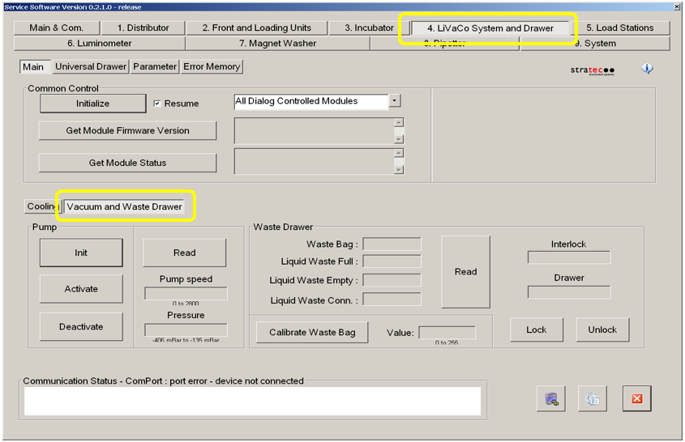
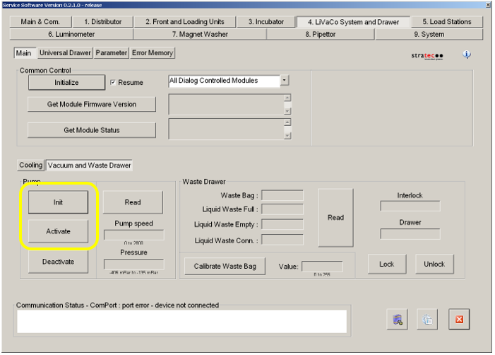

Configuring the Quad Head Vacuum Pump Speed
Parts and Materials Required
- Panther Tool Kit
- Ported Vacuum Manifold Cover
- Ported Vacuum Manifold, Silencer Plate
Time Required
- 15 Minutes
Preparation
Verify that the vacuum system is performing within specification.
The vacuum level should read between -203mbar and - 270mbar in Panther Service Software.
This is the optimum range for vacuum levels on the Panther System.
We strongly recommended reading vacuum levels in Service Software as follows:
Take five readings with five (5) seconds between each reading, then average the five readings.
Address any problems (leaks, clogged filter, etc.) that may cause low vacuum before proceeding with the configuration of the ported vacuum manifold cover.
Procedure
|
|
Warning—This procedure involves opening the Panther's waste manifold and requires careful handling to avoid contamination of the system. |
- Put on proper PPE.
- Shutdown the Panther System and PC.
- Remove the right-side door panel and set aside.
- Locate the vacuum manifold.
- Ensure a Ported Vacuum Manifold cover is installed.
- Power on the Panther System and PC.
- Log in to the FSE Shield and start Panther Service Software.
- Select the 4. LiVaCo System and Drawer tab.
 Select the Vacuum and Waste Drawer tab. See image below.
Select the Vacuum and Waste Drawer tab. See image below.

- Click the Init button, and then click the Activate button in the Pump section.

- Allow the vacuum system to run for at least 10 minutes.
- Read the vacuum pressure and pump speed.
- Note the Vacuum Level and Pump Speed.
- If the vacuum and speed levels are within specification, proceed to Step E. Otherwise continue with the procedure below.

Note—Increased airflow into the vacuum system through the ported manifold cover will increase pump speed. Therefore, “both ports open” will result in the highest pump speed (neither port plug screws installed). “Both ports closed” will result in the lowest pump speed. The left port has a larger diameter air pathway than the right port.
- If the vacuum and speed levels are within specification, proceed to Step E. Otherwise continue with the procedure below.
-
The vacuum level must read between -203mbar and -270mbar and the vacuum pump speed must read above 1650rpm in all of the configurations below.
- Take a reading of the vacuum pressure & pump speed, using Service Software, with both ports plugged.
- Remove the screw from the right hole and take another reading of the vacuum pressure & pump speed. If the vacuum pump speed is below 1650RPM then proceed to step C, otherwise proceed to step E.
- Replace the screw from the right hole and remove the screw on the left port and take a reading of the vacuum level & pump speed. If the vacuum speed is still below 1650RPM then proceed to step D otherwise proceed step E.
- Remove both screws to achieve a vacuum speed above 1650RPM.
- Proceed with installing the vacuum manifold silencer plate.
- Replace the right-side door panel once the vacuum is functioning properly.
Verification
- Log in to the Panther System main software.
- Successfully complete a system prime to verify that the vacuum system functions properly during magnetic wash station aspiration.
 button at the top of the page to send feedback, comments, or change requests.
button at the top of the page to send feedback, comments, or change requests.